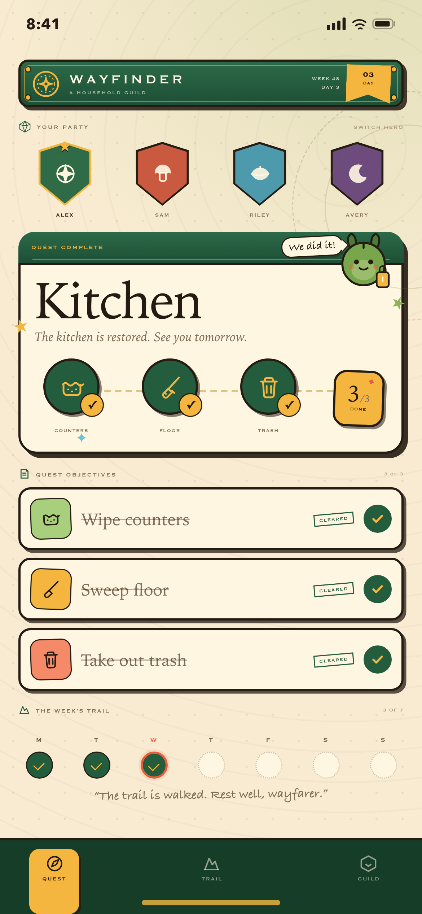
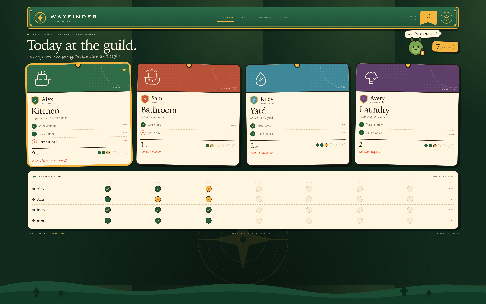

Phone · today / round 2390 × 844

Phone · quest complete390 × 844

Desktop · guild board1440 × 900

Desktop note
The desktop is now a guild noticeboard: illustrated quest cards, party shields, and the week’s trail — not a report table.